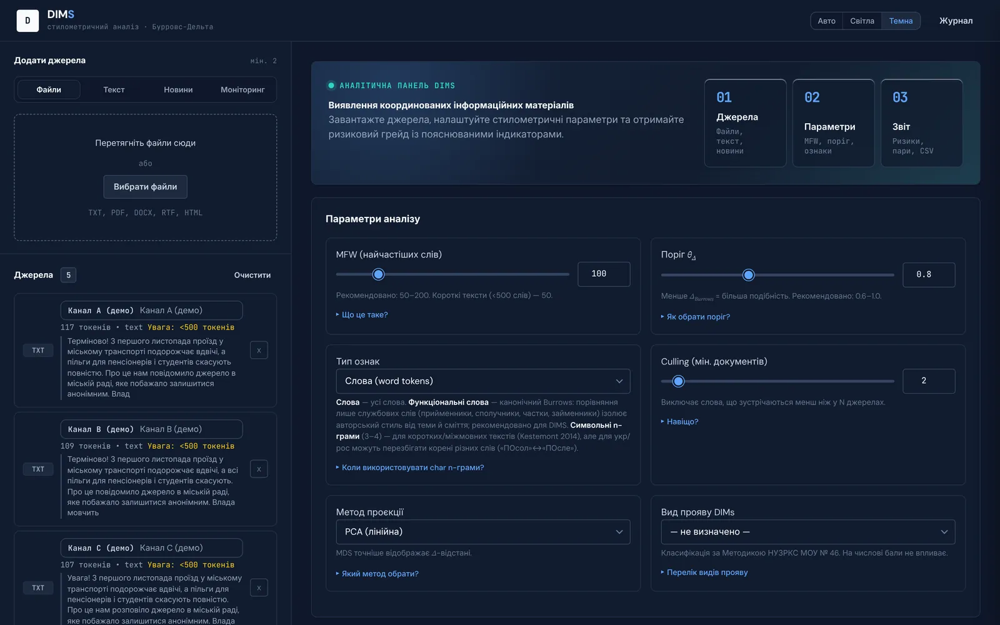
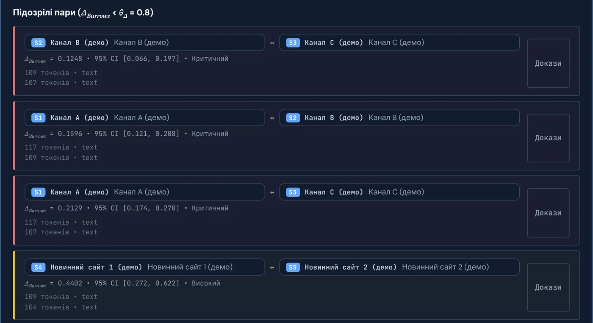
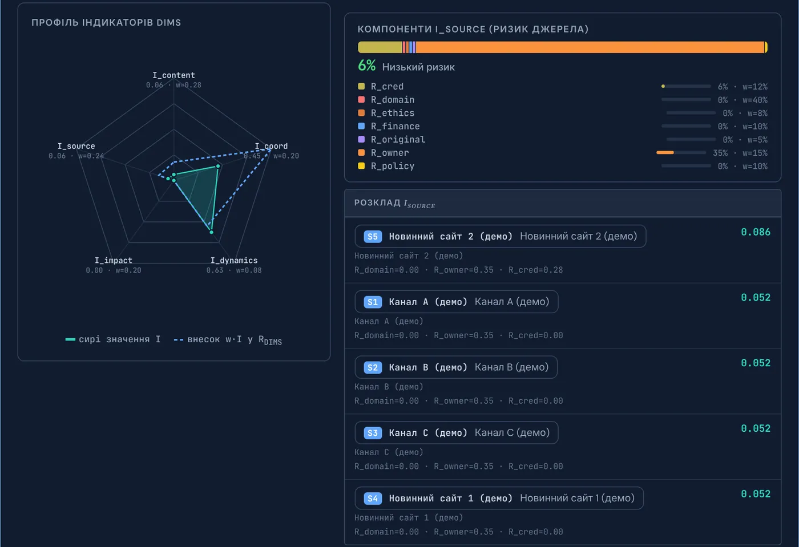
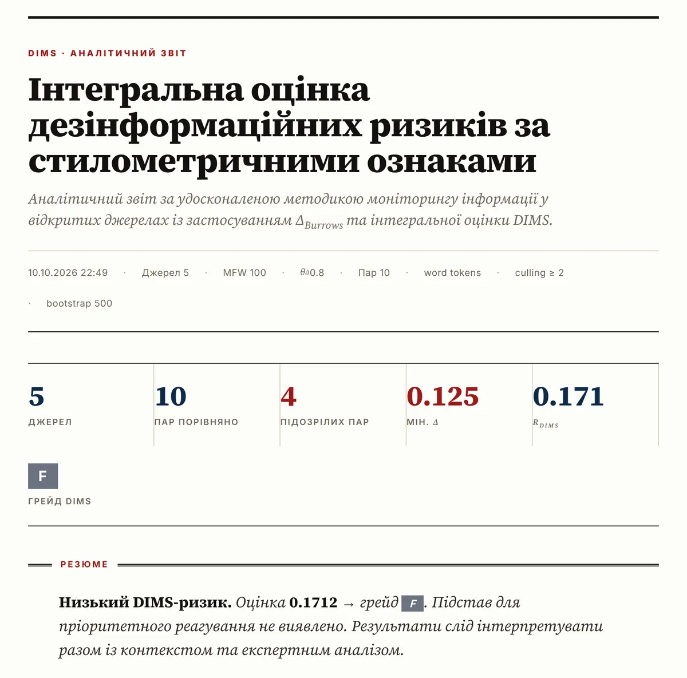

Базовий
0 $
- Аналізів на місяць: 3
- До 5 джерел в одному аналізі
- Файли, посилання та вставлений текст
- Звіт у браузері
Стилометрія для фактчекінгу та моніторингу
DIMS порівнює стиль текстів із різних каналів і сайтів та показує пари, надто схожі, щоб бути незалежними. Результат — інтегральна оцінка ризику з поясненням кожного індикатора.
Перші 100 користувачів отримають Pro за 9 $ на рік.
| A | B | C | N1 | N2 | |
|---|---|---|---|---|---|
| A | 0.16 | 0.21 | 1.85 | 1.87 | |
| B | 0.16 | 0.12 | 1.92 | 1.98 | |
| C | 0.21 | 0.12 | 1.90 | 1.97 | |
| N1 | 1.85 | 1.92 | 1.90 | 0.44 | |
| N2 | 1.87 | 1.98 | 1.97 | 0.44 |
Канали A, B, C: Δ від 0.12 до 0.21, критична подібність
Коли кілька каналів публікують той самий текст із дрібними правками, перевірка кожного допису окремо забирає години. А збіг теми ще нічого не доводить: про одну подію пишуть усі.
Стилометрія порівнює частоти найуживаніших слів. Такий «відбиток» майже не залежить від теми й добре переживає перестановки та заміну окремих слів, тому спільний шаблон чи спільного автора видно за секунди.
Файли TXT, PDF, DOCX, RTF, HTML, посилання на статті або вставлений текст. Або знайдіть матеріали через Google News, RSS-стрічки та публічні Telegram-канали.
DIMS обчислює відстань Δ-Бурровс для кожної пари текстів, будує дендрограму, теплокарту й проєкцію джерел і позначає пари нижче порогу θΔ.
Інтегральна оцінка RDIMS, грейд від F до SSS, довірчі інтервали для кожної пари та звіт, готовий до друку або збереження в PDF.
Стилометрична подібність — лише один із сигналів. DIMS зважує п'ять індикаторів і показує внесок кожного, щоб аналітик бачив, звідки взялася оцінка.
Маніпулятивні маркери, емоційна лексика, тональність.
Стилометрична подібність і синхронність публікацій.
Темп поширення та часові патерни.
Охоплення і тиражування матеріалу.
Домен, власник, ознаки редакційної політики.




Знімки зроблено на синтетичному демо-наборі. Інтерфейс застосунку зараз українською, англійська версія в планах.
Швидко відокремити скоординований вкид від незалежних публікацій на ту саму тему.
Перевірити, чи не переписано «ексклюзив» з чужого шаблону.
Відтворювані розрахунки з параметрами, які можна описати в методиці.
Моніторинг тем у новинах, RSS і Telegram з журналом сесій.
Звіти, які можна показати партнерам і донорам.
Методика ґрунтується на метриці Burrows' Delta і розроблена в межах дисертаційного дослідження зі спеціальності «Інформаційні системи та технології».
Burrows J. ‘Delta’: a Measure of Stylistic Difference and a Guide to Likely Authorship. Literary and Linguistic Computing. 2002. Vol. 17, No. 3. P. 267–287.
Оплата карткою, Apple Pay або Google Pay. Тарифи запрацюють після запуску, зараз відкрито запис у ранній доступ.
0 $
9 $ на рік
для перших 100 користувачів
Звичайна ціна: 36 $ на рік або 4 $ на місяць
За запитом
Залиште email, і ми напишемо, щойно DIMS відкриється. Перші 100 користувачів отримають Pro за 9 $ на рік.
Ні. DIMS показує стилістичну подібність і сукупний рівень ризику. Висновок робить людина після перевірки фактів і контексту.
Аналіз за всіма словами працює з будь-якою мовою, де слова розділено пробілами. Режим функціональних слів зараз підтримує українську, російську та англійську. Порівнювати варто тексти однією мовою.
Зараз українською. Англійська версія інтерфейсу в планах.
Тексти використовуються лише для аналізу у вашому обліковому записі й не передаються третім особам.
Карткою Visa або Mastercard, через Apple Pay чи Google Pay. Підписку можна скасувати будь-коли, доступ зберігається до кінця оплаченого періоду.
Так, для організацій є тариф «Команда» з розгортанням на вашій інфраструктурі.